mu-Clid Manual: Euclidean Sequencer Plugin User Guide
mu-Clid: Polyrhythmic Euclidean Sequencer.
Prefer a file? Download the manual as a PDF. Back to mu-Clid · release notes · all guides.
1. Introduction
mu-Clid is a polyrhythmic Euclidean rhythm sequencer and sample trigger plugin from Transwarp Development Project. It runs as a VST3 plug-in, a CLAP plug-in, and a standalone application.
mu-Clid lets you build up to eight simultaneous rhythm tracks. Each track is driven by up to three independent Euclidean generators (Ring A, Ring B, and Ring C) and triggers a sample through a complete voice chain — pitch control, multi-mode resonant filter, amplitude envelope, and a per-voice insert effect. Each rhythm has eight LFO or step modulators that can drive any voice parameter. A shared FX chain provides a modulation effect, a tempo-synchronised delay, and a reverb, all routed through an eight-channel mixer with sidechain ducking and two master inserts. Instead of playing a sample, any rhythm can send its pattern out as MIDI notes to other instruments.
Every feature is available to everyone: all eight rhythms, full step counts and preset saving. mu-Clid is free to download and use, with every feature, and a one-off £20 licence removes the licence reminder (see Supporting mu-Clid).
Who Is This For?
mu-Clid is for producers and sound designers who work with rhythmic textures, polyrhythmic patterns, and generative percussion. It is equally at home in a full DAW session — fully automatable, multi-bus capable, and synchronised to host transport — or as a standalone instrument for live performance and sketching, with optional external MIDI clock sync.
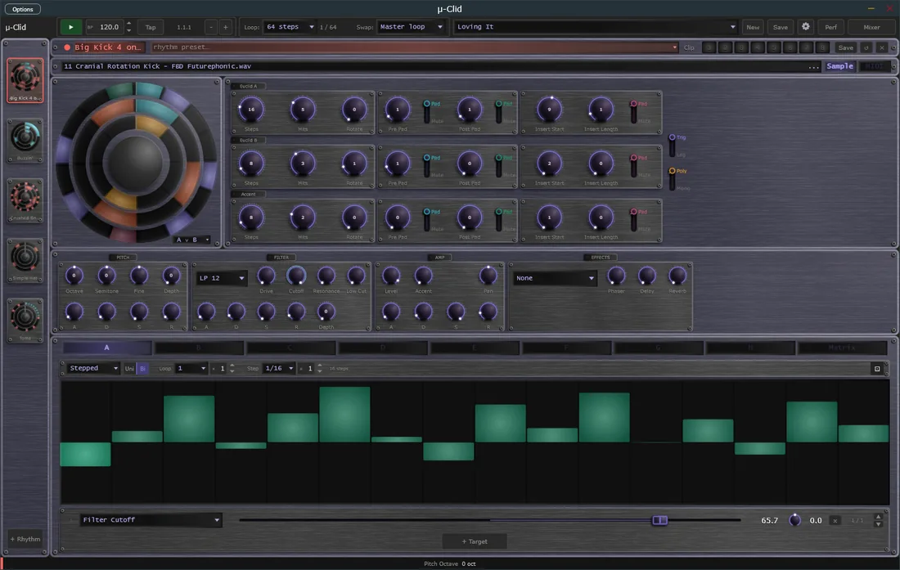
2. What is Euclidean Sequencing?
Euclidean rhythms come from a 2004 paper by Godfried Toussaint, who noticed that an algorithm Euclid wrote down 2,300 years ago for finding the greatest common divisor of two numbers also produces patterns that look strikingly like the rhythms of the world's traditional music.
The idea is simple: given a number of steps and a smaller number of hits, distribute the hits as evenly as possible across the steps. With 16 steps and 4 hits you get a hit every fourth step — a classic four-on-the-floor pattern. With 8 steps and 3 hits the hits cannot divide evenly, so the algorithm spaces them as nearly evenly as it can: hit, rest, rest, hit, rest, rest, hit, rest. That is the Cuban tresillo.
Many traditional rhythms turn out to be Euclidean. The Cuban son clave, the Brazilian bossa nova, West African bell patterns, Bulgarian folk meters, and Persian aksak rhythms can all be described by a (steps, hits) pair. This is why even random Euclidean patterns tend to feel musical — the algorithm produces the same kind of even-but-not-uniform spacing that human musicians have arrived at across centuries of tradition.
mu-Clid pushes the idea further by giving each rhythm three independent Euclidean generators and combining them with logical operators — OR for layered patterns, AND for sparse coincidences, XOR for interlocking rhythms. Add to this rotation (shifting the same pattern to start on a different step), padding (forcing silence at the beginning, end, or middle of the bar), and an accent layer (Ring C), and a few simple controls give you access to a vast range of grooves.
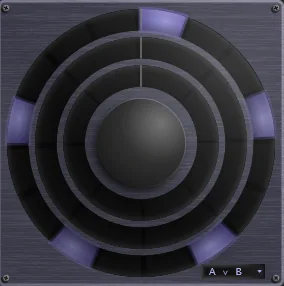
3. Installation
Plug-in Files
mu-Clid ships in three formats:
- VST3 — copy mu-Clid.vst3 to %ProgramFiles%\Common Files\VST3\
- CLAP — copy mu-Clid.clap to %ProgramFiles%\Common Files\CLAP\
- Standalone — run mu-Clid.exe from any location
Content Folder
On first launch mu-Clid creates a content folder at %USERPROFILE%\Documents\TDP\muClid\ with sub-folders for presets (full preset files, .muClid), rhythms (single-rhythm preset files, .muRhythm) and samples. You can change the content folder, and the sample library folder that the sample browser opens in, in the Settings overlay at any time.
Default Presets
To make your own starting point, tick Save as Default in the Save window. A full preset saved this way is loaded when mu-Clid starts, and the New button in the Transport Bar loads it again (after asking whether to discard unsaved changes). A rhythm preset saved as default is applied to every new rhythm you add.
mu-Clid MIDI
mu-Clid MIDI is a separate, free companion plug-in from Transwarp Development Project: one Euclidean rhythm that sends MIDI notes to any instrument, with no audio of its own. It has its own manual. The mu-Clid rhythm presets (.muRhythm) work in both.
Supporting mu-Clid
mu-Clid is free to download and use, and every feature works for everyone. A copy without a licence shows a polite reminder each time it loads. A one-off licence for £20 removes the reminder: after you pay, a licence key is sent by email from Lemon Squeezy, our payment provider, and entering the key removes the reminder for good. The key changes nothing else; mu-Clid works the same with or without it.
A copy without a key shows a polite 'Support mu-Clid' window every time you load mu-Clid: each new instance in your DAW, and each time the standalone app starts. It has three buttons:
- Maybe later — closes the window for that instance and carries on. It appears again the next time you load mu-Clid.
- Enter licence key — opens the 'Enter licence key - mu-Clid' panel, where you type in your key.
- Get a licence — opens the checkout page in your web browser. A licence is a one-off payment of £20, and a key is emailed to you.
The reminder cannot be switched off without a licence. To bring the window back at any time, click the Support link at the right of the Status Bar, or the Support button in the About panel.
To enter your key, click Enter licence key in the Support window, or click the mu-Clid logo to open the About panel and click Enter a key. In the 'Enter licence key - mu-Clid' panel (it reads 'Enter your licence key to remove the support reminder. Everything works either way.'), paste your key into the Licence key box and click Activate (or press Return). If you do not have a key yet, click Get a licence to open the checkout page in your web browser. mu-Clid needs an internet connection the first time, to register the key. One key can be used on up to 5 machines. When the key is accepted the panel shows a confirmation and closes, the About panel thanks you for your support, and the Support window and Support link no longer appear.
A licensed copy shows 'Thank you for supporting mu-Clid.' in the About panel.
Once activated, mu-Clid checks your key with the server now and then when it starts. If you are offline at that moment it carries on working as normal for up to 30 days.
If activation fails, the panel tells you why. Check that you pasted the whole key and that you are online, then try again. A key that has already been used on 5 machines needs one of them released first; use Contact Support at the bottom of the Settings page. If the computer has no internet connection at all, the licence key panel shows a machine code at the bottom. Send that code to Contact Support and you can be sent an offline licence file for that computer, to place in the mu-Clid content folder.
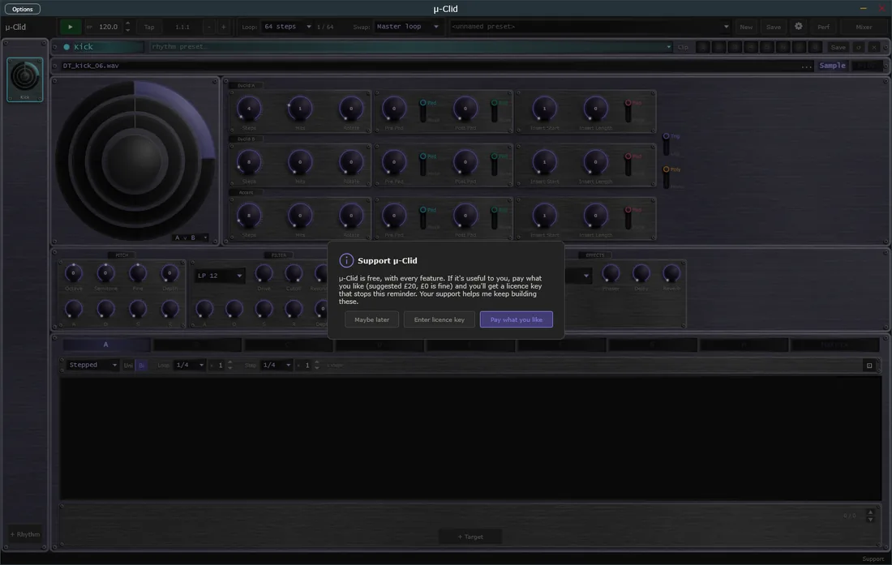
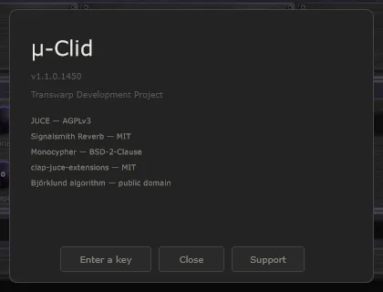
4. Interface Overview
The mu-Clid window is divided into four regions:
- Transport Bar (top) — playback, BPM, presets, and global controls
- Rhythm Sidebar (left) — one item per active rhythm, plus an Add button
- Main Panel (centre) — the selected rhythm, or the Mixer when toggled
- Status Bar (bottom) — live readout of the name, value and unit (ms, s, Hz, kHz, %, dB, semitones, cents, octaves or a note name) of the last touched control, with a small Support link at the right-hand end. When a newer version is available, an Update available link appears beside Support (see Update Check in the Settings chapter)
The window has two sizes, Medium and Large, chosen in Settings (Display, Size). Everything scales with it. In the standalone application an Options button at the top left of the window opens the audio and MIDI device settings.
5. Transport Bar
Controls from left to right:
- mu-CLID logo — click to open the About panel, where you can also support mu-Clid or enter a key
- Play / Stop — in DAW mode follows the host transport, even while the plug-in is bypassed; in standalone starts and stops playback. Locked while an external MIDI clock controls play (see MIDI Clock Sync). Green when stopped, red when playing.
- BPM display — read-only in DAW mode; editable in standalone mode. Tempo runs from 20.0 to 300.0 BPM with one decimal (for example 127.5; whole tempos show .0). Click the up or down arrow to step one whole BPM and keep the fraction (127.5 becomes 128.5); Shift+click steps a tenth. Double-click to type a value such as 127.5 or 127,5; a value outside the range is clamped to it. The same field appears in Settings. Locked, and showing the clock's tempo to a tenth, while an external MIDI clock sets the tempo.
- Clock lamp — standalone only. Replaces the Tap button and sits between the BPM display and the Position readout, and appears only while MIDI clock sync is on with Messages set to Clock only or Clock + Transport (it is hidden with Transport only, and when Source is Internal). Dim amber means waiting for clock, green means locked to the clock, red means the clock was lost and the transport has stopped. The lamp stays steady; it never blinks. Hover over it to read its state in the status bar. See MIDI Clock Sync.
- Tap button — standalone only. Takes the place of the Clock lamp whenever the lamp is not shown (the internal clock, or MIDI clock sync set to Transport only), so you see Tap or the lamp, never both. Tap it in time with the beat to set the tempo: it needs two taps, averages your last four intervals, and starts a new count if you pause for more than two seconds. The result is rounded to a tenth of a BPM, kept within 20 to 300, and written into the BPM field.
- Nudge buttons (− and +) — standalone only. Two small buttons just right of the Position readout. Hold − to run the groove 4 % slower, or + to run it 4 % faster, to line up with another player by ear. Let go and the set tempo returns exactly; the BPM field never changes. Under an external MIDI clock, holding a button shifts the groove against the clock by that amount, and the shift stays until the next Start.
- Position — bar, beat, and sixteenth readout (e.g. 3.2.1). In DAW mode it follows the host's position, even while the plug-in is bypassed, and counts in the host's time signature: in 3/4 a bar has three beats, in 7/8 it has seven eighth-note beats, and the last number is the sixteenth within the beat. Bar 1 starts where the host's bar 1 starts, so a pickup bar is counted correctly. The standalone counts in the time signature chosen in Settings (4/4 by default). The time signature only changes the readout; mu-Clid's Master Loop and pattern lengths still treat a bar as four beats.
- Loop dropdown — the master loop: how many steps the entire pattern runs before it starts again. Choices are the infinity symbol (free-running) or 16 to 256 steps in steps of 16. A counter beside it shows the current step and the loop length, for example 1 / 64.
- Swap dropdown — beside the Loop group, labelled Swap:. Chooses when a queued preset change takes effect: Master loop (at the end of the master loop) or Rhythm loop (at the end of the rhythm's own loop). It is saved with the preset. Hover over it to read its description in the status bar.
- Preset dropdown — shows the current preset name; click to load another.
- New button — loads your default preset (see Default Presets), after asking whether to discard unsaved changes.
- Save button — opens the Save Preset window.
- Settings (gear) icon — opens the Settings overlay.
- Perf button — standalone only. Sits between the Settings icon and the Mixer button and turns on Performance mode (also Ctrl+P). See Performance Mode in the Presets chapter.
- Mixer button — toggles the Mixer view. The label changes to Sequencer when the mixer is active.
6. Rhythm Sidebar
The sidebar shows one item per active rhythm. Each item displays a miniature Rhythm Circle, the rhythm name, and its colour dot. Click an item to select it and display it in the main panel.
The selected item shows a vertical accent bar in the rhythm colour on its right edge, connecting it visually to the main panel. When a rhythm fires a hit, its sidebar item briefly pulses with the rhythm colour.
The + Rhythm button at the bottom of the sidebar adds a new rhythm (maximum eight); it is disabled when eight rhythms are active. New rhythms are named Rhythm 2, Rhythm 3 and so on. To delete a rhythm, use the Delete (×) button in the Rhythm Panel header — a confirmation window appears first. The last remaining rhythm cannot be deleted.
Rhythms can be reordered by dragging items up or down within the sidebar. A pending hot-swap is shown by an orange SWP badge on the sidebar item; click the badge to cancel the swap.
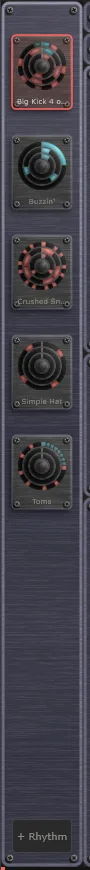
7. Rhythm Panel
The Rhythm Panel is the main editing surface for the selected rhythm. It is divided into five sections from top to bottom: Header, Sample Bar, Rhythm Circle and Euclidean Panel, Voice Section, and Modulator Panel.
Header
Shows the rhythm's colour dot and name (click the name to rename it), a rhythm-preset dropdown that lists the .muRhythm files in your Rhythms folder, the Clip strip of eight numbered pads (see Clips in the Presets chapter), and three buttons: Save (saves this rhythm as a .muRhythm preset), Reset (the circular arrow: sets the rhythm back to its defaults, after a confirmation that also warns when it will clear the rhythm's clips) and Delete (×: removes the rhythm, after a confirmation). Selecting a preset loads it into the current rhythm immediately, or stages a hot-swap while playing. Mute and Solo for each rhythm are on its channel strip in the Mixer.
Sample Bar
The sample bar shows the loaded sample's file name on a small display. Drag a sample file onto the bar, or click it, to browse. Supported formats: WAV, AIFF, MP3, FLAC. An empty bar reads 'drop sample here or click to browse'. If the file has moved, the bar shows in amber 'Missing: name — click to find'; click it to locate a replacement.
At the right end of the bar the Sample | MIDI switch chooses what this rhythm does when it fires. Sample (the default) plays the loaded sample through the voice. MIDI sends MIDI notes instead (see Output: Sample or MIDI below).
Output: Sample or MIDI
Each rhythm has its own output choice, set with the Sample | MIDI switch at the right of the sample bar. In MIDI mode the rhythm makes no sound of its own. Each hit sends a short MIDI note (about 20 milliseconds long) to the MIDI output of the plug-in, or to the MIDI output you chose in the standalone's options, so you can play any synth or drum machine from the pattern. The sample display reads 'MIDI output', and the Voice Section is replaced by a MIDI Out box with these controls:
- Note — the note to send, from C-1 to G9 (middle C is C4). Default C2 (note 36).
- Channel — the MIDI channel, 1 to 16. Default 1.
- Velocity — how hard the notes are played, 1 to 100 percent. Default 100.
- Accent — 0 to 100 percent. Default 0 (no accent difference). In the lower half of the range, accented hits (where the Accent ring fires) get louder, from velocity 100 up to 127. In the upper half, accented hits stay at 127 and the other hits get softer, down to velocity 75. The Velocity setting then scales the result.
A MIDI rhythm's mixer channel is dimmed and its sends and voice controls have no effect. Two rhythms set to the same note and channel share one note, so one rhythm's note-off can cut short the other's note. Switching back to Sample brings back the voice controls with their settings intact.
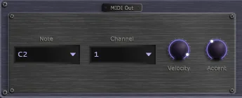
8. Rhythm Circle
The Rhythm Circle shows concentric rings, one per generator. Rings are drawn outside-in:
- Ring A (outermost) — purple. Primary Euclidean generator.
- Ring B — coral. Secondary Euclidean generator.
- Ring C — amber dashed outline. Accent layer.
During playback the rings rotate so the current step is always at the 12 o'clock position. Step 1 is at the top when the transport is at bar 1, beat 1.
Step Colours
- Filled in ring colour — a hit step
- Dim outline — an empty step
- Cyan-teal fill — a pre-padded step (forced silence before the pattern)
- Teal fill — a post-padded step (forced silence after the pattern)
- Pink fill — an insert-padded step (silence within the pattern)
On each hit a radial pulse expands from the step arc position and the centre hub briefly flashes in the rhythm colour.
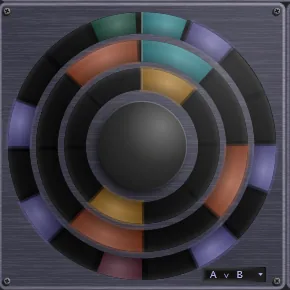
9. Euclidean Panel
The Euclidean Panel sits to the right of the Rhythm Circle. It has three rows of knobs, named Euclid A, Euclid B and Accent on small plates. The Logic selector sits in the bottom corner of the Rhythm Circle, and two switches (Trig | Leg and Poly | Mono) sit at the far right.
Euclid A, Euclid B and Accent
All three rows have the same controls, in three boxes. The Accent row is the accent layer (Euclid C, see below) but is shaped in exactly the same way.
The first box:
- Steps (1 to 64, default 8) — total number of steps in the pattern, including any padding
- Hits (0 to Steps) — hits distributed as evenly as possible using Bjorklund's algorithm
- Rotate — shifts the pattern left or right by whole steps
A new Euclid pattern starts in the textbook position described by Toussaint; use Rotate to move it from there.
The second box, Pad, forces silence at either end of the pattern. Each knob has a Pad | Mute switch beside it:
- Pre Pad — steps of silence at the start of the pattern
- Post Pad — steps of silence at the end of the pattern
The third box, Insert, forces silence inside the pattern, with its own Pad | Mute switch:
- Insert Start — the step where the silent section begins. It is counted from 1 on the knob, so with a Pre Pad of 4 in Pad mode the first step you can insert at is 5.
- Insert Length (0 to 8) — how many steps the silent section lasts.
What the Pad | Mute switch does: in Pad mode the silent steps are taken out of the pattern, and all the hits are spread over the steps that remain. In Mute mode the pattern stays spread over every step, and any hits that land in the silent steps are silenced. The Status Bar spells out the current setting when you flip a switch.
Ranges update dynamically: when Steps changes, Hits, Rotate and Insert Start clamp to fit, and the pads and insert can never use more steps than the pattern has.
Logic
The Logic selector in the bottom-right corner of the Rhythm Circle sets how the Euclid A and Euclid B patterns combine into one. Its five choices use logic symbols; the Status Bar spells each one out:
- A ∨ B (OR) — fires if either A or B fires
- A ∧ B (AND) — fires only when both A and B fire on the same step
- A ⊕ B (XOR) — fires when exactly one of A or B fires
- A∧¬B (A not B) — fires when A fires and B does not
- B∧¬A (B not A) — fires when B fires and A does not
Pattern Legato (Trig | Leg)
The Trig | Leg switch at the right of the panel sets Pattern Legato for the whole rhythm. Trig (the default) retriggers the pitch, filter and amp envelopes from zero on every hit — the right behaviour for percussion. Leg lets hits that follow immediately after another hit (no silent step between them) skip the envelope retrigger, so the envelopes ride through the joined notes and play as one note. This gives the smooth legato attack you expect from pad or synth material, and is the recommended mode when a pattern has runs of consecutive hits and the sample is long enough that a retrigger would feel choppy.
Voice Mode (Poly | Mono)
The Poly | Mono switch sets how overlapping hits behave. Poly (the default) gives each hit its own voice, so tails overlap. Mono lets each hit cut off the one before it.
Accent Layer (Euclid C)
The Accent row (Euclid C) has no logic relationship with A or B. When the Accent ring fires on the same step as a combined A and B hit, that step is accented. The accent gain (in dB) is set by the Accent knob in the Amp box of the Voice Section; in MIDI mode the Accent knob of the MIDI Out box does the same job.
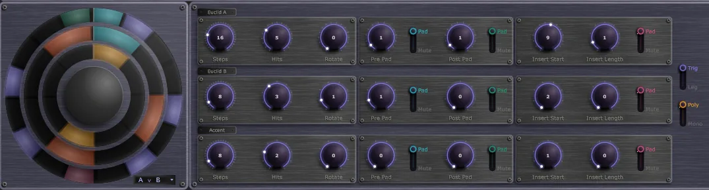
10. Voice Section
The Voice Section is a strip below the Rhythm Circle with four boxes: Pitch, Filter, Amp, and Effects. The first three have a configuration row at the top and an envelope row (A, D, S, R) below. Envelope times run from 0 to 10 seconds. The knob labels are fixed words with no units; they do not change as you turn a knob. The Status Bar shows the value and its units as you hover or turn. In MIDI output mode this strip is replaced by the MIDI Out box (see Output: Sample or MIDI).
Pitch (purple)
Configuration: Octave (-3 to +3), Semitone (-12 to +12), Fine (-100 to +100 cents), and the envelope Depth.
Envelope: Attack, Decay, Sustain, Release, and Depth (0 to 24 semitones, default 0). The envelope adds to the base pitch by the Depth amount.
Filter (teal)
Configuration: Type, Drive (pre-filter valve saturation, 0 to 100 percent), Cutoff (20 Hz to 20 kHz, default 8 kHz), Resonance (0 to 0.99, default 0.2), and Low Cut (a post-filter high-pass that clears subsonic build-up from high resonance settings; 0 to 1000 Hz, Off at 0). Cutoff is clamped safely below the Nyquist frequency, so the filter stays stable at any sample rate.
Available filter types:
- LP 6 / LP 12 / LP 24 — low-pass at 6, 12, or 24 dB per octave
- HP 6 / HP 12 / HP 24 — high-pass at 6, 12, or 24 dB per octave
- BP 12 / BP 24 — band-pass at 12 or 24 dB per octave
- Notch / Notch 24 — band-rejection (the 24 dB version is sharper)
- AP 12 — second-order all-pass (phase shift, no level change)
- Comb + — positive-feedback comb with resonant peaks at multiples of cutoff
- Comb − — negative-feedback comb; peaks at odd multiples, Karplus-Strong plucked-string character
- Peak / Lo Shf / Hi Shf — parametric EQ-style boosts (+12 dB)
Envelope: Attack, Decay, Sustain, Release, and Depth (up to 48 semitones of cutoff sweep).
Amp (amber)
Configuration: Level (-60 to +6 dB, default 0 dB), Accent (0 to +12 dB extra gain on accented steps, default 0), and Pan (left to right, centre by default). This is the same pan as the channel's pan in the Mixer, and it can be modulated.
Envelope: Attack, Decay, Sustain, Release. Shapes the output volume of every hit. Release 10 seconds reads End.
How the envelopes respond to triggers
A rhythm hit is a trigger, not a held key, so the Attack-Decay-Sustain-Release envelopes (pitch, filter, and amp) behave a little differently from a keyboard synthesiser:
- Attack and Decay run on every untied hit - the envelope retriggers from zero. For percussion this is usually all you hear: a fast pattern re-fires the attack before the envelope clears the decay stage, so it behaves like a classic attack-decay drum envelope.
- Sustain is the level the envelope holds once decay finishes, and you only reach it during Pattern Legato runs (see Pattern Legato). Tied hits skip the retrigger, so the envelope rides through the contiguous notes and settles at the Sustain level. On non-legato percussion the sustain level has little effect because the next hit retriggers first.
- Release is not a key-up fade. A triggered hit never sends a note-off, so the release stage is never entered during normal playback. Instead it sets how long a voice tails out when a rhythm or full-preset hot-swap retires it (see Hot-Swapping) - the retired voice fades over its release time so swaps stay smooth. For the same reason, Release is the one envelope stage that is not offered as a modulation target.
So a legato phrase holds at the Sustain level and plays the sample out (or is retriggered by the next hit) rather than fading on a key-up - there is no note-off to start a release. To make a sound die away between hits, shape it with Decay and Sustain rather than Release.
Effects: Insert and Sends (pink)
The Effects box holds the voice's insert effect and its three FX sends. The sends are Effect, Delay and Reverb. The Effect send is labelled with the name of the mixer's current effect, for example Phaser. Each send goes from 0 to 100 percent, default 0, and can be modulated. They are the same sends as on the channel strip in the Mixer.
The insert is a per-voice character effect placed in the voice chain after the amp envelope, so feedback-based algorithms (Karplus, Vocoder) can ring on past the envelope's release from their own internal state — a sustained Karplus pluck will continue after a short envelope decay. Available algorithms (alphabetical in the dropdown after None):
- None — bypass with no CPU cost
- 3-Band EQ — low shelf, mid peak with adjustable centre frequency, and high shelf
- Bitcrusher — sample-rate and bit-depth reduction with anti-aliasing and dither
- Chorus — thick, shimmering doubling (see Chorus, Flanger and Phaser below)
- Clipper — soft or hard clipping at adjustable threshold, with a gain-reduction meter like the Compressor's
- Compressor — feed-forward dynamics (4:1 ratio)
- Flanger — sweeping comb-filter whoosh (see Chorus, Flanger and Phaser below)
- Fold — triangular foldback (metallic harmonics)
- Hard Clip — hard clipping (aggressive distortion)
- Karplus — physical-modelling plucked-string synthesiser; samples excite the K-S delay line
- Limiter — brick-wall limiting (100:1 ratio)
- Overdrive — tube-style overdrive; Drive, Output, Bias and Tone knobs
- Phaser — sweeping notches (see Chorus, Flanger and Phaser below)
- Ring Mod — sine-wave ring modulation
- Soft Clip — tanh waveshaping (warm saturation)
- Tape Sat — tape-style saturation; Drive, Output, Head Bump and Tone knobs
- Vocoder — voice/carrier vocoder with internal pitched carrier; 20 analysis bands
- Vocoder St — stereo Vocoder; independent analysis on left/right channels for preserved width
Each algorithm exposes four slot knobs that take on algorithm-specific meanings. For example in Bitcrusher mode the slots are Bits, Rate, Dither, and LPF; in 3-Band EQ mode they are Low, Mid, Mid Hz, and High; in Karplus mode they are Note, Octave, Feedback, and LPF. The four knobs appear once you choose an algorithm other than None, and their labels update when you switch algorithm. A Gain Reduction arc sweeps anti-clockwise over the Output knob when Compressor or Limiter is active.
Karplus
Karplus excites an internal delay-line resonator with the incoming sample audio, producing the characteristic decaying pluck of a string. Note and Octave set the pitch (C1 to B4); Feedback sets the decay time (above 95 percent the string rings for several seconds; at 100 percent it is effectively infinite); LPF darkens the feedback path to produce a softer, faster-decaying tone. Because the resonator's feedback is independent of the amp envelope, the pluck rings naturally past short decays — pair a 300 ms amp decay with 80 percent feedback for percussive plucks that bloom into sustained tones.
Overdrive
Overdrive adds the warm, singing distortion of an overdriven valve amplifier. Drive (0 to 100) sets how hard the signal is pushed; Output (-24 to 0 dB) sets the level coming out, so you can turn the drive up without getting louder; Bias (0 to 100 percent) adds even harmonics for a thicker, asymmetrical tone; Tone (200 Hz to 20 kHz) darkens the sound as you turn it down. Presets saved before Overdrive was added keep the insert they were saved with.
Tape Sat
Tape Sat gives the soft, dense squash of a tape machine. As you turn Drive up, the highs compress and soften first, a little even-harmonic warmth is added, and small signals stay clean. Its four knobs:
- Drive (0 to 100, default 30) — how hard the signal is pushed into the tape.
- Output (-24 to 0 dB, default 0 dB) — the level after the saturation, so you can turn the drive up without getting louder.
- Head Bump (0 to 100 percent, default 30) — a gentle lift of up to 4 dB in the low end around 75 Hz, like the bass swell of a tape head. At 0 it is off.
- Tone (200 Hz to 20 kHz, default 20 kHz) — a low-pass filter on the result. Turn it down to soften the top end.
Chorus, Flanger and Phaser
Chorus, Flanger and Phaser are also available as insert effects. They use the same sound as the Effect send of the same name, with a Mix knob to blend with the unprocessed signal. Inserts saved before this change may sound wider and thicker now.
- Chorus — Rate (0.05 to 8 Hz, default 0.8), Depth (default 50 percent), Delay (5 to 30 ms, default 15) and Mix (default 50 percent). A three-voice chorus with the voices spread across the stereo field.
- Flanger — Rate (0.05 to 5 Hz, default 0.3), Depth (default 70 percent), Feedback (-95 to 95 percent, default 50) and Mix (default 50 percent). The left and right sweeps run a quarter of a cycle apart for width.
- Phaser — Rate (0.05 to 5 Hz, default 0.4), Depth (default 80 percent), Feedback (0 to 90 percent, default 40) and Mix (default 50 percent). Six stages, with the left and right sweeps a quarter of a cycle apart.
Vocoder and Vocoder Stereo
Vocoder analyses the incoming sample as a modulator signal and shapes a pitched internal carrier with the resulting spectral envelope across 20 bands. The Wave knob picks the carrier waveform (Sine, Saw, White, Pink); for Sine and Saw the Note and Octave knobs set the pitch and Unison stacks up to seven detuned voices for width. The two noise carriers (White, Pink) grey out Note, Octave, and Unison since they have no fundamental pitch. Vocoder Stereo uses the same algorithm but with independent analysis on left and right channels — preserves stereo width from the source sample at extra CPU cost.
Knob Interaction
Drag up to increase, drag down to decrease. Double-click to type an exact value. Hover over any knob to see its name and current value, with units, in the Status Bar. Knob labels never carry units and never change as you turn a knob. Time, rate and cutoff knobs give more of their travel to the short and low settings, so fine adjustments there are easier; this includes the time and rate knobs of the Effect, Delay and Reverb. A cyan ring around a knob indicates it is being modulated; an animated arc shows the live modulated value.
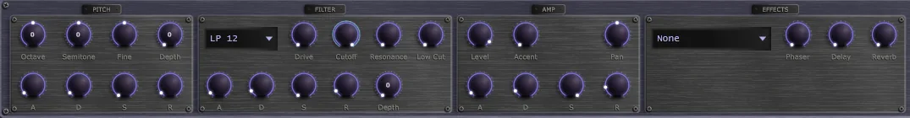
11. Modulator Panel
The Modulator Panel fills the lower portion of the Rhythm Panel. Each rhythm has eight independent modulators (Mod A through Mod H) plus a Matrix tab.
Modulator Tabs
Each modulator has:
- Mode dropdown: Smooth (continuous LFO curve) or Stepped (bar graph)
- Polarity switch: Uni (0 to +1) or Bi (-1 to +1)
- Loop length: a note-value dropdown plus an integer multiplier (e.g. 1/4 x 4 = one bar)
- Step length (Stepped mode): a note-value dropdown plus a multiplier, with the resulting number of steps shown beside it
- Dice button at the right end of the header: randomises the modulator's values without changing its shape
- Curve editor (smooth) or step editor (stepped)
- A scrolling playhead line showing the current loop position
- A target list: each assignment shows a row number, a destination dropdown, a bipolar depth bar, and a source-side curve knob (drag to shape the modulation response: positive values are exponential, negative are logarithmic). The assignments are shown one at a time; step through them with the up and down arrows and the counter at the right
- + Target button — adds a destination
In Smooth mode the curve is a smooth line through each point that never swings past its neighbours. Click on the curve to add a node, drag to move, right-click to remove, ALT-click a segment to add a bezier handle. In Stepped mode: drag bars up or down. Step Length sets the duration of each bar.
Matrix Tab
Lists every active modulation assignment for the current rhythm. Each row shows the source modulator, the destination parameter (grouped by Voice section), and a bipolar depth bar. Add or remove assignments here for an overview view.
Modulation targets are per-rhythm only — a modulator in one rhythm cannot affect another rhythm. Global FX parameters cannot be modulated. The rhythm's own Pan and its Effect, Delay and Reverb sends can be modulated.
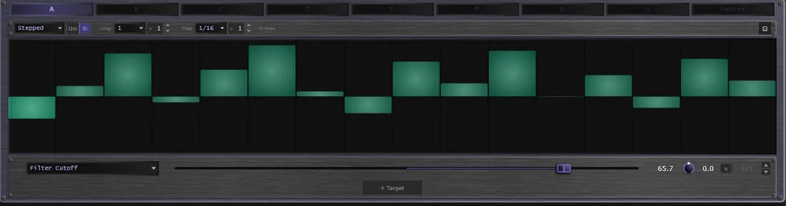
12. Mixer
Click the Mixer button in the Transport Bar to open the Mixer view. The sidebar remains visible.
Meter Mode
A SegmentControl at the top of the mixer selects the metering standard applied to every channel, return, and master meter:
- Peak — instant attack with peak hold and clip LED. Useful for catching transients.
- VU — 300 ms RMS ballistics matching the classic VU convention. 0 VU is marked at −18 dBFS.
- K-12 — K-system reference at −12 dBFS. Colour zones shift: green below 0 K, yellow to +4 K, red above.
- K-14 — K-system reference at −14 dBFS. Headroom reduced; suited to dynamics-heavy material.
Channel Strips
The mixer always shows eight rhythm channels, even when fewer rhythms are active — inactive channels are dimmed. Channel order from left to right:
- Rhythm 1 to Rhythm 8
- Effect Return, Delay Return, Reverb Return
- Master (slightly wider, with the Master Inserts attached)
Each rhythm strip contains, from top to bottom: a coloured header, the channel name, a sidechain section (source dropdown, Amount, Attack, Release), three FX send rotaries (the Effect send is labelled with the current effect's name, then Delay and Reverb), a pan knob, a vertical fader with VU meter and gain-reduction meter, an output bus selector, a level readout, and Mute and Solo buttons.
The faders use a rectangular cap like a small knob, with a pointer line across its middle that marks the level, running in a groove that lights up from the bottom to the cap. Every fader in the mixer looks and works the same way. In the Status Bar the mixer's Pan, Send and Sidechain knobs, the Level fader, the Mute and Solo buttons and the Effect and Delay switches all show their name and value as you use them. The sidechain Attack and Release start at 0 and can go down to 0.
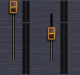
Sidechain Ducking
Each rhythm channel can duck from any other channel, or from an external sidechain signal fed in through the host (VST3 / CLAP side-chain bus). The source dropdown includes all rhythm channels plus an External option; Amount sets the depth (0 to 100 percent), and Attack and Release shape the envelope follower. When a channel is being ducked, a downward-filling gain-reduction meter appears next to its main VU meter.
FX Send Behaviour
All three FX sends (Effect, Delay, Reverb) on rhythm channels are standard parallel sends. The dry signal always passes to the master bus at the channel fader level, and the send knob adds a copy of the channel signal — scaled by the send amount — into the FX return bus. Turning a send up never reduces the dry signal.
Master Inserts
Two compact insert panels, Insert 1 and Insert 2, sit beside the Master strip. Each provides the same algorithm set as the per-rhythm voice insert (None plus the fourteen effects, including Karplus, Overdrive and the Vocoders). The summed output passes through Insert 1, then Insert 2, after the master fader.
FX Rows
Three bordered panels below the channel strips for Effect, Delay, and Reverb. Each has an on/off toggle, an algorithm dropdown, and parameter knobs. See Chapter 13.
Multi-Bus Output (DAW)
When running as a VST3 or CLAP plugin, mu-Clid exposes up to ten stereo output buses: Master, eight Direct Outs, and FX Returns. Each rhythm channel has an output bus selector (Main, or Out 1 to Out 8) — channels routed to a Direct Out bypass the master mix and FX sends, going straight to their bus post-fader. The multi-bus feature can be toggled in the Settings overlay; turning it off forces the host to a single stereo bus on next reload.
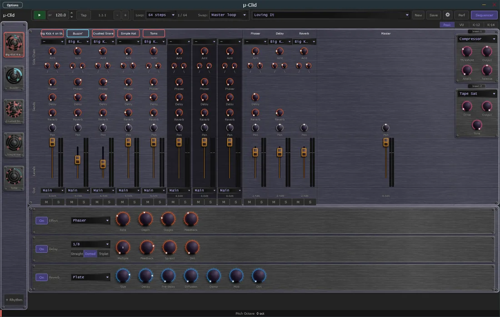
13. Effects
Effect Slot
Hosts one of four algorithms. The Effect is a pure send, like the Reverb, so it has no Mix knob; set how much of each rhythm goes through it with that rhythm's Effect send.
- Chorus — Rate, Depth, Voices (2 to 4), Spread. Multi-voice chorus with per-voice rate detuning.
- Flanger — Rate, Depth, Feedback (bipolar). Through-zero flanger so the sweep can pass through unity.
- Phaser — Rate, Depth, Stages (2 to 12), Feedback. Notches sweep logarithmically from 200 Hz to 4 kHz.
- Echo — Time, Feedback, Spread. Free-time delay (use the Delay slot for tempo sync).
Delay Slot
Stereo delay, tempo-synchronised or free:
- Time dropdown — Free, or a note value: 1/32, 1/16, 1/8 or 1/4. With a note value, a Straight | Dotted | Triplet switch and a Multiple knob (1 to 8, the number of note values) set the delay time. In Free mode a Time knob sets it in milliseconds (1 to 4000).
- Feedback — number of repeats
- Spread — slightly different left and right channel times for stereo widening
- Dirt — soft saturation on the feedback path for tape-degraded character
Hermite cubic interpolation on the read pointer prevents zipper noise when the delay time changes (BPM nudges, LFO automation).
Reverb Slot
A Hadamard FDN reverb (Signalsmith-DSP) with four characters:
- Room — short, intimate
- Hall — long, diffuse
- Plate — bright, dense
- Spring — bouncy, modulated
Controls: Size, Decay (how long the tail rings, 0.1 to 10 seconds, default 2.5), Pre-delay, Diffusion, Damp, Mod, Dirt. Reverb is always a pure send — there is no Mix knob.
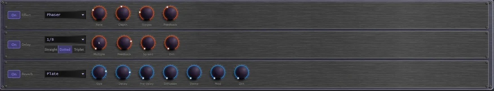
14. Presets
Saving a Preset
Click Save in the Transport Bar to open the Save window. Enter a name, an optional description and a category. Tick Embed samples in file to include all loaded sample audio inside the preset file, making it fully self-contained; the sample is stored compressed without any loss of quality, so embedded presets stay small. Tick Save as Default to make this your default preset (see Default Presets). Click Save to write a .muClid file to your Presets folder. If saving fails, for example because the disk is full, mu-Clid shows an error message and never leaves a half-written preset behind.
Loading a Preset
Select a preset from the dropdown in the Transport Bar. The list is grouped by category, and the preset browser shows each preset's category and description. All rhythms, voice parameters, and sample references are restored immediately. If a sample cannot be found at its original path, mu-Clid searches the Samples folder in your content directory as a fallback. The preset dropdown shows <unnamed preset> when no preset is currently loaded.
Presets and saved DAW projects store each setting's real value, and choices by name, so a future update that changes a knob's range cannot change a saved sound. When a preset, a rhythm preset or a saved session is loaded, any setting it does not contain is set to its default, so a loaded sound never inherits leftovers from what was there before.
Hot-swap During Playback
Loading a single-rhythm .muRhythm file while playback is running stages the swap until the next loop boundary, so the change happens in time. The Swap dropdown in the Transport Bar lets you choose between Master loop and Rhythm loop. A pending swap is shown by an orange SWP badge on the affected rhythm in the sidebar — click the badge to cancel.
FX tails survive the swap: when the new rhythm takes over, the old rhythm's sample continues playing through its amp envelope's release, and any filter resonance, comb feedback, or Karplus / vocoder feedback from its insert effect rings out naturally. The retired rhythm fades over its envelope's release time plus a short drain budget for feedback-based inserts (roughly two seconds), so transitions feel musical even when the old sample has a long tail or the insert effect was ringing at the moment of swap.
Clips
A clip is a stored copy of one rhythm's current state, ready to recall in a moment while the music plays. Every rhythm has up to eight clips. They sit in the Clip strip in the rhythm's header, between the rhythm-preset dropdown and the Save button: the word Clip followed by pads numbered 1 to 8. Use clips to prepare variations of a rhythm and switch between them in time.
Each pad is lit in the rhythm's own colour:
- Bright and steady — the clip that is playing.
- Dim — a clip is stored here and is available.
- Unlit, with just its number — the pad is empty.
- Pulsing — the clip is queued and will start at the next swap point.
- Flashing on and off — the playing clip belongs to a muted rhythm.
How to use the pads:
- Click a stored pad to launch it. If playback is running, the clip waits for the next swap point (set with the Swap dropdown) and the pad pulses until it starts; when playback is stopped it starts at once. Clicking another stored pad while one is waiting replaces the waiting clip.
- Click the playing pad to mute the rhythm. Click it again to unmute. If another clip is waiting, the click cancels the wait instead and the playing clip carries on.
- Click an empty pad to store the rhythm's current state there. Nothing is lost, so there is no question. The new clip becomes the playing one.
- Shift + click any pad to store the rhythm's current state in it. If the pad holds a different clip from the one playing, mu-Clid asks you to confirm with Replace. Storing over the playing clip, to update it after a tweak, needs no confirmation.
- Right-click a pad (or Ctrl + click) to open a small menu with Store here and Clear. Clear is available only on a stored pad and asks you to confirm. Clearing the playing clip leaves the rhythm playing as it is; no pad is lit afterwards.
Turning a knob changes only the rhythm that is playing, not the stored clip. To keep a tweak, store it again with Shift + click. Recalling a clip replaces any changes you have not stored, without asking.
Resetting a rhythm with Reset also clears its clips; the confirmation then reads This also clears its clips. Deleting a rhythm removes its clips with it. Clips are saved with full presets (.muClid) and with your DAW session or standalone state. Clips are not saved in single-rhythm .muRhythm files.
In Performance mode the Clip strip cannot be clicked, but it keeps moving so you can see what the control surface is doing.
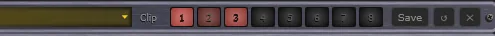
Performance Mode (Standalone)
Performance mode turns the standalone app into a locked gig view. The screen shows the preset that is playing, exactly as normal, but you cannot change anything with the mouse or keyboard. Only a connected control surface (set up through MIDI mapping) switches presets and rhythm layers. Performance mode is not available in the VST3 or CLAP plug-in.
Performance mode plays a performance: a saved list of up to eight full presets, stored as a .muPerformance file in the Performances folder inside your content folder. You make, edit and choose performances in the Performance chooser.
The Performance Chooser
Open the chooser from the Performances entry at the bottom of the preset dropdown in the Transport Bar, from the Performances button in the footer of the Preset Browser, or by clicking the Perf button (or pressing Ctrl+P) when no performance has been chosen yet. You can only open it while Performance mode is off.
- On the left is the list of your saved performances. Click one to open it. The list scrolls.
- On the right are the eight places in the performance. Each row shows its number, the preset name, which product the preset is for, and buttons. An empty row has a + Preset button. A filled row has Replace, Up, Down and Remove: Replace picks a different preset, Up and Down move the preset in the order, and Remove empties the place.
- A preset whose file can no longer be found stays in its place with a red lamp and the word missing. Replace it or remove it.
- New starts an empty performance. Load opens a .muPerformance file that you choose from disk into the list; it never saves anything. Save stores the performance under a name and an optional description. Rename changes its name. Delete removes the saved file after asking you to confirm. Saving under the name of another performance asks before it overwrites.
- Use makes this performance the one that Performance mode plays, then closes the chooser. It does not change the preset that is playing now. If the performance is new or has changes you have not saved, Use saves it first (a new one asks for a name). Use is unavailable while the performance has no presets.
- While you have unsaved changes the title shows the name followed by (unsaved). Closing the chooser, clicking New, or opening another saved performance then asks Discard unsaved changes? Choose Discard to lose the changes, or cancel to keep working.
To fill a place, click + Preset or Replace. The Preset Browser opens in pick mode: its Load button reads Pick, and the Performances button is hidden. Select a preset and click Pick (or double-click it) to put it in the place and return to the chooser with your other edits kept. Close returns to the chooser without picking. The browser lists presets for this product only.
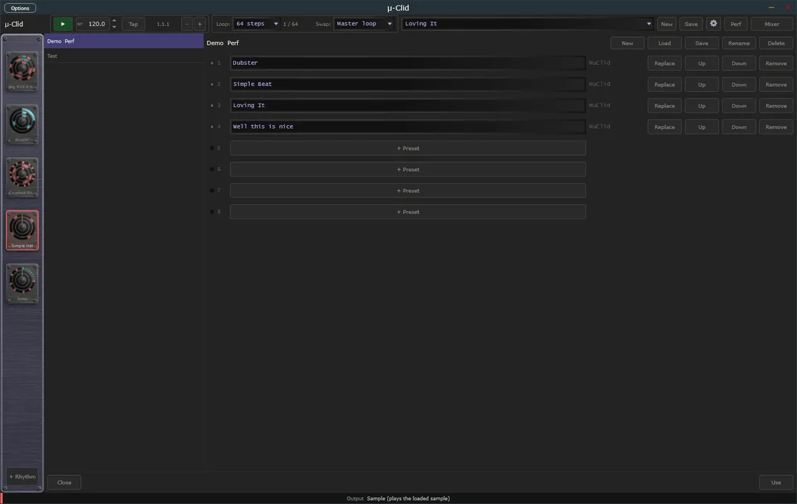
Entering
Click the Perf button (or press Ctrl+P). The preset that is playing carries on. Any open window, such as the Preset Browser, Mixer or Settings, closes without saving. If no performance has been chosen yet, the Performance chooser opens instead and the mode stays off.
What You See
- The Perf button lights in the app colour and its label changes to LIVE, and a thin lit line runs along the bottom of the Transport Bar.
- The preset dropdown, New and Save are replaced by a step indicator: a display showing the position and name of the playing preset (for example 3/8 Bassline), followed by a dimmed next preset when there is room, and a row of eight lamps. A bright lamp is the playing preset, a dim lamp is an available preset, a pulsing lamp is the preset queued to start, and an unlit lamp is an empty place. A red lamp marks a preset whose file is missing.
- When the control surface queues a switch, the playing preset stays on screen until the switch lands. The queued lamp pulses, an orange SWP badge appears, the display shows the queued preset in pulsing text, and the status bar reads Queued followed by the preset. All of this clears when the switch happens or is cancelled. The switch lands at the point set by the Swap dropdown.
- In the sidebar, the Add button is replaced by a read-only indicator such as Layer 3/5. The screen follows the control surface: selecting a rhythm on the surface shows that rhythm on screen.
- Nothing dims or changes colour; knobs, meters and the playhead keep moving, so you can see what the surface is doing.
Leaving
Press and hold the Perf button for one second. The button fills from left to right while you hold, and the status bar reads Hold to leave Performance mode. Let go early to stay in the mode. A plain click does nothing, so you cannot leave by accident. When you leave, the normal controls come back.
Rhythm Presets
.muRhythm files are single-rhythm presets stored in the Rhythms folder. They can be saved with embedded samples and loaded into any rhythm slot. Save a rhythm preset to reuse a particular pattern and voice combination across multiple full presets.
To save a rhythm preset, click Save in the Rhythm Panel header; the window is the same as for full presets. To load one, use the dropdown in the Rhythm Panel header (labelled 'rhythm preset…'). The dropdown lists the .muRhythm files in your Rhythms folder. Selecting one loads it immediately, or stages a hot-swap if playback is running. Right-clicking an item offers Load and Delete options.
Preset File Format
.muClid and .muRhythm files are XML, with a MuClidPreset (or single Rhythm) root element. They can be inspected and edited with any text editor. Embedded sample audio is stored as base64 within the relevant Rhythm element.
15. MIDI Integration
MIDI Clock Sync (Standalone)
When running as a standalone application, mu-Clid can follow an external MIDI clock from a drum machine, groovebox, or DAW. First choose the MIDI input that carries the clock in the standalone's MIDI settings. Selecting the input does not turn sync on by itself. To follow the clock, open Settings and, in the MIDI Clock section, set Source to MIDI In; set it back to Internal to turn sync off and ignore any incoming clock. A Messages choice appears, which decides what mu-Clid takes from the clock:
- Clock only — you start and stop mu-Clid with its own Play button, but the tempo and beat follow the clock's ticks. The BPM field is locked and shows the clock's tempo. The clock's Start and Stop messages are ignored.
- Transport only — the clock's Start, Continue, and Stop messages control playback (Start restarts from bar 1, Continue carries on from where it stopped), but mu-Clid plays at the tempo in its own BPM field and ignores the clock's ticks. The Play button is locked.
- Clock + Transport — the clock runs everything. Its Start, Continue, and Stop messages start and stop playback, and its ticks set the tempo and the beat. The first clock after Start counts as the downbeat, so your steps line up closely with the external device. The Play button and BPM field are locked.
With Clock + Transport or Transport only, mu-Clid also follows Song Position Pointer messages. If you stop the external sequencer, move its playhead, and press Continue, mu-Clid picks up from the new position instead of where it stopped.
With Clock only or Clock + Transport, a Clock lamp appears in the transport bar, between the BPM display and the Position readout. It shows the state of the incoming clock and stays steady in every state; it never blinks:
- Dim amber — Waiting for clock. Sync is on, but no clock pulses have arrived yet, or the master device is stopped and sending nothing.
- Green — Locked. mu-Clid is following the clock. Hover over the lamp and the status bar shows the tempo, for example "Locked at 120 BPM".
- Red — Lost. The clock pulses stopped arriving for about a quarter of a second while the master was playing, for example because a cable came loose or the master device was switched off. mu-Clid stops the transport, and the status bar shows "MIDI Clock: Lost, transport stopped" once, without you having to hover. When the pulses come back, mu-Clid carries on by itself.
The lamp is hidden with Transport only, because the clock's ticks are not used, and whenever Source is Internal. The BPM display works as before: it is locked and shows the clock's tempo while the clock sets the tempo.
Sync Offset — with Source set to MIDI In, a Sync Offset field appears in the MIDI Clock section of Settings. It runs from −50 to +250 ms (the label reads simply Sync offset) and defaults to 0. The value is shown with a sign, for example +25. The arrows step 1 ms; Shift+click steps 10 ms. A positive value makes mu-Clid play earlier than the clock says. Enter your audio output latency here (about 20 to 40 ms on Windows WASAPI) so the sound lands on the beat of a hardware master. mu-Clid remembers the setting between sessions.
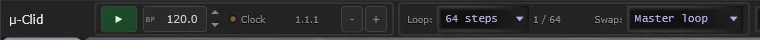
MIDI Program Change to Preset (DAW)
Incoming program change messages on MIDI channels 1 to 8 can load .muRhythm presets into rhythm slots 1 to 8 (channel N maps to slot N), and program changes on channel 9 can load full .muClid presets. The tables that map program numbers to presets are opened from Settings, under MIDI Program Change: the Rhythm Preset Table button for channels 1 to 8 and the Main Preset Table button for channel 9. While playing, a change is staged and applied at the next loop boundary (hot-swap); the Swap dropdown in the Transport Bar chooses which loop.
MIDI Mode (DAW)
In a DAW, Settings (MIDI, MIDI Mode) offers two modes for notes sent to the plug-in. Free (the default) ignores notes: the patterns follow the host transport. Note makes the patterns follow your keyboard instead: the first note you press starts the patterns from step 1, and they stop when you have released every note. Envelopes and effect tails play out as usual. In Note mode the plug-in uses the host's tempo.
16. Settings
Click the gear icon in the Transport Bar to open the Settings overlay. Everything fits on one screen, in two columns, under three headings. Click Close to return.
General (left column):
- Audio, Master Vol — the overall output level.
- Display, Size — Medium or Large window. Reopen the app for the label fonts to rescale fully.
- Transport, Time signature (standalone) — 2/4, 3/4, 4/4, 5/4, 6/4, 7/4, 5/8, 6/8, 7/8, 9/8 or 12/8; default 4/4. It changes how the bar.beat.sixteenth Position readout counts (a beat is a quarter note in x/4 and an eighth note in x/8). Patterns still run in four-beat bars. The tempo is set in the Transport Bar, so it is not repeated here.
- Output, Multi-bus output (DAW) — enable or disable the extra output buses; the hint beside it reads '(rescan host to apply)', so rescan plugins in your host after toggling.
- Updates, Check for updates — a tick box, ticked by default. Whether the app checks once a day for a newer version (see Update Check below).
MIDI (right column):
- MIDI Clock, Source (standalone) — Internal, or MIDI In to follow an external clock. With MIDI In, the Messages choice and the Sync offset field appear (see MIDI Clock Sync).
- MIDI Mode (DAW) — Free or Note (see MIDI Mode).
- MIDI Program Change — the Rhythm Preset Table and Main Preset Table buttons (see MIDI Program Change to Preset).
Locations:
- Sample Library — the folder the sample browser opens in. Browse… chooses another folder; Default goes back to the standard one.
- Content Folder — where mu-Clid keeps presets, rhythm presets and samples. Browse… and Default work the same way.
A Contact Support link at the bottom of the page is there when you need help. The Settings page also has a Send Feedback link (feedback@transwarp.me) beside Contact Support.
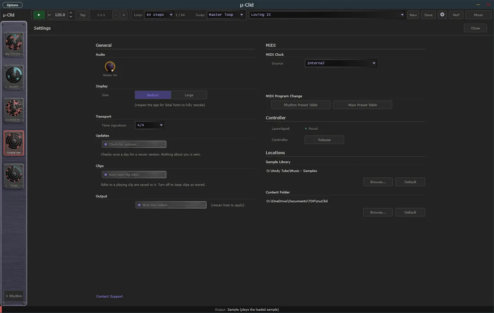
Update Check
mu-Clid can tell you when a newer version is available. Once a day it asks the transwarp.me website for the latest version number. When a newer version exists, a small Update available link appears at the right of the Status Bar, beside the Support link. Hover over it to see which version is out and which one you have.
- Click the link to open the download page in your web browser. mu-Clid never downloads or installs anything itself. The link then stays hidden for that version and comes back only when a still newer one is released.
- Right-click the link and choose Hide this notice to hide it for that version without opening the page.
- The link never appears in Performance mode.
Privacy: the check is a plain request for a public file. It sends nothing about you: no name, no identifier, no version number and no details of your computer. As with any request to a website, the site can see your internet (IP) address, as it would if you opened the page in a browser. The app compares the answer with its own version on your machine. To switch the check off, open Settings and, under General, untick the Check for updates box. With the box unticked, mu-Clid sends no request at all and shows no link. The box is ticked by default.
17. Tips and Workflow
- Polyrhythm: Set Ring A to 16 steps / 4 hits and Ring B to 12 steps / 3 hits with Logic set to OR — a 16-against-12 polyrhythm that locks every 48 steps.
- Accents with the Accent ring: Give the Accent row (Euclid C) a different step count to A and B and set a few hits. The Accent knob in the Amp box adds a dB boost whenever the Accent ring coincides with an A and B hit.
- Groove via Pre Pad: Use Pre Pad on Ring A to push the whole pattern slightly later in the bar, similar to adding swing.
- Sidechain pumping: Set rhythm 2's sidechain source to rhythm 1, dial Amount to 60-80%, and use a fast attack with a slow release for classic kick-ducks-bass.
- Self-contained sharing: Tick Embed Samples when saving to share a preset with collaborators who may not have your sample library.
- Default content: Tick Save as Default when you save a preset to have it load every session and whenever you press New. Do the same with a rhythm preset to use it as the template for every new rhythm.
- Playing other instruments: Switch a rhythm to MIDI, pick a note and channel, and route the plug-in's MIDI output to a drum machine or synth. Give the Accent ring a different step count to add velocity variation.
- Status Bar: Hover over any knob to see its name and current value without clicking — the Status Bar never clears automatically.
- DAW automation: Every per-rhythm parameter is exposed to the host with human-readable names. Recorded automation moves the on-screen knobs in real time.
18. Connecting to mu-link
mu-link is a companion application from Transwarp Development Project: a local audio hub and master clock for the mu family. When mu-link is running, the mu-Clid standalone application connects to it automatically — mu-Clid's audio is summed into mu-link's mix and its transport locks to mu-link's master clock. The plug-in versions are unaffected; only the standalone connects, because in a DAW the host already owns the clock and audio device.
How to Connect
- Launch mu-link, then launch mu-Clid standalone — in either order. Within about a second the mu-Clid title bar shows 'mu-link connected'.
- mu-Clid's audio now plays through mu-link's output device, summed with any other connected mu apps. mu-Clid appears as a channel in mu-link's client strip with its own level, pan, mute, and solo.
- mu-Clid's transport follows mu-link: mu-link is the tempo master, and its Play/Stop and tempo drive mu-Clid. Use mu-link's transport (not mu-Clid's) while connected.
- Quit mu-link and mu-Clid instantly reverts to its own audio device and internal transport — no restart needed.
MIDI While Connected
- MIDI in — the keyboards and controllers you enabled in the standalone's MIDI settings still reach mu-Clid while it is connected, so program changes still load presets. For now they arrive roughly 85 milliseconds late, which is under a tenth of a second. Incoming MIDI clock is not followed while connected, because mu-link sets the tempo; to sync to external gear, connect its clock to mu-link instead.
- MIDI out — mu-Clid's MIDI output keeps going to the MIDI output chosen in the standalone's MIDI settings while it is connected. It is timed to line up with what you hear from mu-link and with mu-link's MIDI clock out.
- While connected, mu-Clid holds that MIDI output port itself. You can switch to a different port in the MIDI settings and it follows, but choosing none has no effect until mu-link disconnects.
- When mu-link disconnects, mu-Clid sends all-notes-off to the MIDI output so no notes hang on your gear, then hands the port back to the standalone's MIDI settings.
This lets you run mu-Clid, mu-Tant, and other mu standalones together, perfectly in sync and mixed to a single output — and lets mu-link slave the whole rig to an external MIDI clock from a drum machine or DAW. See the mu-link User Manual for the full picture.
19. Technical Specifications
- Formats: VST3, CLAP, Standalone (Windows)
- Rhythms: up to 8 simultaneous slots, each playing a sample or sending MIDI notes
- Steps per generator: 1 to 64
- Voices per rhythm: 4-voice polyphonic pool with round-robin steal
- Filter types: 16 (LP / HP / BP at 6, 12, and 24 dB per octave; Notch 12/24; AP 12; Comb + / Comb −; Peak; Lo Shelf; Hi Shelf)
- Insert effects: 14 plus None (Soft Clip, Hard Clip, Fold, Bitcrusher, Clipper, 3-Band EQ, Compressor, Limiter, Ring Mod, Tape Sat, Overdrive, Karplus, Vocoder, Vocoder Stereo) — on both the per-rhythm voice insert and the master insert
- Modulators per rhythm: 8 (smooth LFO or stepped)
- Modulation assignments: up to 64 per rhythm
- Output buses (DAW): up to 10 stereo (Master + 8 Direct Outs + FX Returns)
- Supported sample formats: WAV, AIFF, MP3, FLAC
- Preset format: .muClid (XML)
- Rhythm preset format: .muRhythm (XML)
- Third-party libraries: JUCE, Signalsmith Reverb (MIT), Monocypher (BSD-2-Clause), clap-juce-extensions (MIT)
Hosts That Do Not Run an Event Loop
mu plugins need the host to run its normal event loop, as every ordinary DAW does. A few headless or offline-only renderers do not. In those, changes made by MIDI or a controller, MIDI program changes, and preset loads made while playing may not take effect until the host runs its event loop. If you hit this, load presets while the transport is stopped, or render with a host that runs its event loop.
Prefer a file? Download the manual as a PDF. Back to mu-Clid · release notes · all guides.